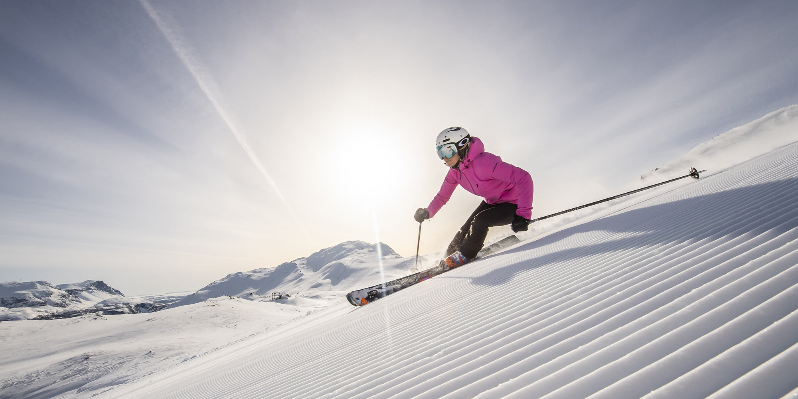

Ziemas izklaides dabā
Satura rādītājs
Slēpošana
Slēpošana ir sportiska aktivitāte un sporta veids, kurā slēpotājs ar slēpju palīdzību pārvietojas pa sniegu. Slēpošana tiek izmantota arī militāros nolūkos, kā arī, lai pārvietotos vietās, kur ir bieza sniega sega. 1924. gadā tika nodibināta Starptautiskā Slēpošanas federācija, kas atbild par visiem slēpošanas sporta veidiem, izņemot biatlonu. Populārākie slēpošanas veidi ir distanču slēpošana, kalnu slēpošana, tramplīnlēkšana, ziemeļu divcīņa, frīstaila slēpošana, snovbords.
Braukšana ar kamanām
Braukšana ar kamanām ir aktivitāte, kurā tiek izmantotas kamanas. Šī aktivitāte Latvijā lielākoties ir izklaides nolūkos.
Slidošana
Slidošana ir cilvēka pašvirzība pa ledus kārtu, izmantojot ledus slidas ar metāla asmeņiem, lai pārvietotos pa ledus virsmu.
Dažas šādu vietu adreses